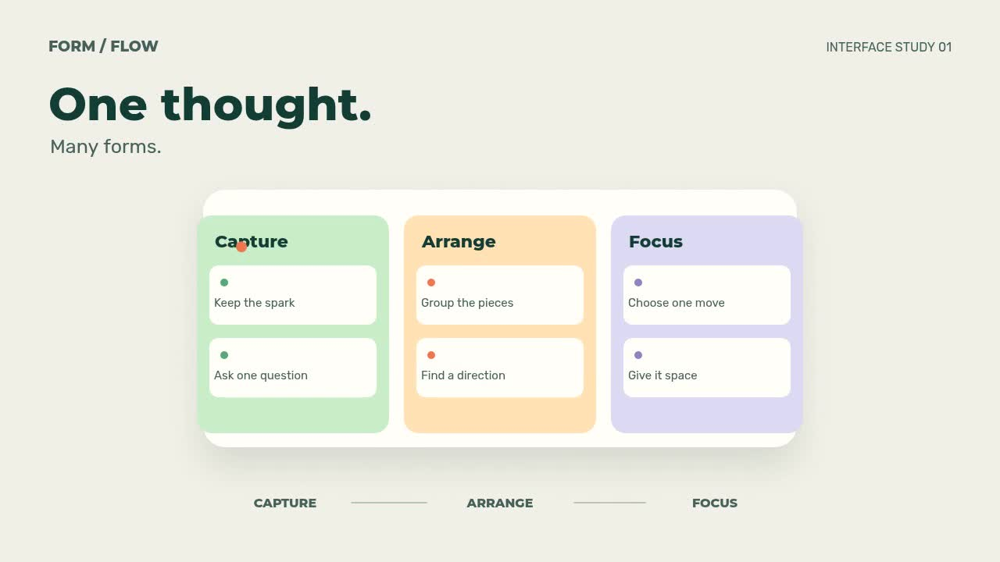
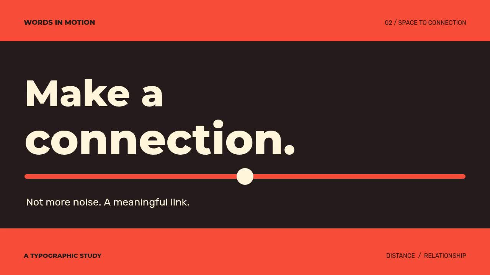
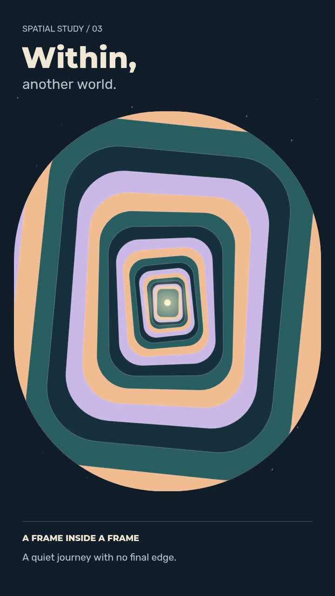

One thought. Many forms.
A continuous chip, card and board morph.
1280 × 720 · 9 seconds · 30 fps
Interactive player · MP4 · Style guideANIMATION VIDEO MAKER / ORIGINAL STUDIES
Three brand-neutral, editable Canvas compositions. No remote assets. No model calls.

A continuous chip, card and board morph.
1280 × 720 · 9 seconds · 30 fps
Interactive player · MP4 · Style guide
Semantic letter spacing and a bridge match-cut.
1280 × 720 · 10 seconds · 30 fps
Interactive player · MP4 · Style guide
Portrait recursion with an original synthesized sound bed.
720 × 1280 · 8 seconds · 30 fps
Interactive player · MP4 · Style guideOriginal code and composition: Ricardo Pupo Larguesa, Hermes Agent. MIT. Local fonts retain their package OFL notices.
Reproduction and validation notes